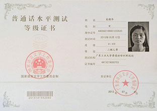

《中华人民共和国宪法》第19条规定：“国家推广全国通用的普通话”。普通话即现代标准汉语，是法定的全国通用语言。
说好普通话不仅是个人文化素质和文明素质的综合反映，也是扩大交往，寻求自我发展的重要条件。为了更好的推广普通话和说好普通，广东。
省通话测试中心在萝岗区开源大道11号企业加速器C5栋天河金领技工学校设立普通话水平测试站，现组织普通话水平培训与测试，具体事如下
1.在校师生，企业在职员工。
2.有志于从事教师行业，广播电视播出机构的播音员、节目主持人，配音人员，播音、和电影、话剧表演，律师医护人员、导游员、讲解员 。
3.公共服务行业的营业员等公共服务行业的播音员、话务员、解说员、导游员、客服人员。
1.要申请取得高教、普教及幼教系统教师资格证书的人员必须先取得普通话二级乙等以上证书。在教师评定职称时也必须拥有相关的普通话等级书。
2.公共服务行业的播音员、话务员、解说员、导游员、客服人员等特定岗位人员应达到二级乙等以上水平;电影、话剧、广播剧、电视剧等表演。
3.配音人员，播音、主持人专和电影、话剧表演专业的教师和毕业生，普通话水平必须达到一级水平。
第一期
2015年12月2日
第二期
2016年1月9日
第三期
2016年3月5日
第一期
2016年3月12日
第二期
2016年3月19日
第三期
2016年3月26日
9:00-11:30
（理论）
13:30-16:30
1.普通话水平测试的内
范围 与评分标准。
2.声母、韵母发音训
难点音 训练及方音矫正。
3.声调训练。
4.音变轻声、儿话音训练。
5.朗读作品训练。
6.说话题目训练。
考前辅导,考前机测
李云霞
陈媛
陈媛
C5栋3楼阶梯室311
电脑室C5
栋314,318,312
1.考试时间：2016年4月16日
2.考试地点：萝岗区开源大道11号企业加速器天河金领技工学校C5栋
1.报名时间：即日起至2015年1月8日
2.报名咨询：020-28955969 关老师13580493876 QQ:2848535217
3.报名资料：身份证复印件1份，蓝底小二寸证件电子照片(大小不能大于80K)
4.报名地点：萝岗区开源大道11号企业加速器天河金领技工学校C5栋308
1.测试考务培训费 380元/人(含6次培训费245元+考试费110元+教材费25元)
注: 补考者参加培训免费,只需交考试费110元.
1.经考试达到二级乙等由广东省语言文字工作委员会颁发普通话水平测试等级证书。
